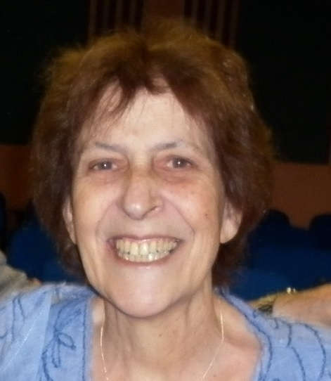
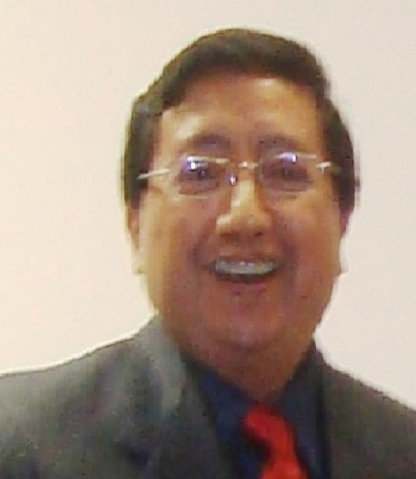
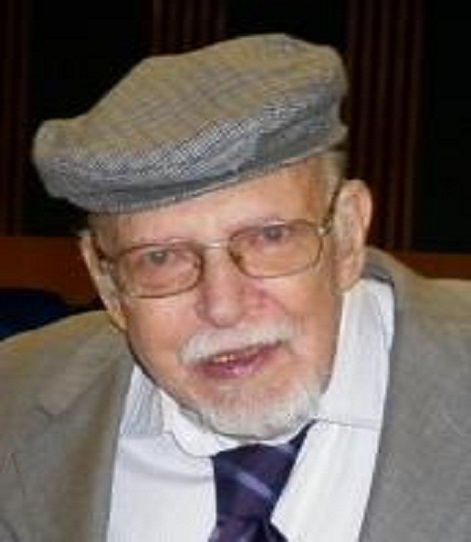

Licenciada Cristina Preti

Comprometida con el Departamento de Matemática de la Facultad de Ciencias Exactas, llegando a ser Profesora Titular Emérita, Vicedecana, Consejera y Asesora en diferentes ámbitos dentro de la Universidad.
Durante muchos años fue la Delegada por Salta ante la Unión Matemática Argentina (UMA), representando a todos los docentes e investigadores y dando su entusiasmo, carisma, sapiencia en todo lo referente a Matemática y Educación Matemática.
Todo lo hizo con la pasión y entusiasmo que la caracterizó, dejando su recuerdo en todos los ámbitos en los que ha trabajado.
Mujer dedicada no solo al trabajo sino a cultivar amistades, que la recordarán siempre por su simpatía, optimismo. Luchadora incansable ante todos los problemas que se le presentaron.
Dr. Orlando José Avila Blas

Brillante desde que comenzó sus estudios universitarios en la Universidad Nacional de Salta (UNSa). Ganador de la medalla de oro al mejor estudiante. Fue Profesor en Matemática y Física. Continuó perfeccionándose estudiando en la Universidad Nacional de Tucumán hasta lograr el título de Magíster en Estadística Aplicada. Luego se doctoró en Energías Renovables mención “Serie de Tiempos” con la brillantez académica que siempre lo caracterizó.
Profesor Asociado en la UNSa, dictando clases en carreras de grado como posgrado en la Maestría de Matemática Aplicada que se dicta en el Departamento de Matemática. Miembro de la Comisión de Posgrado de la Facultad, como así también de la Maestría donde trabajó hasta los últimos momentos de su vida.
Caracterizaron en su accionar docente su carisma, rigor científico y académico sembrando semillas en la dirección de tesis de grado y posgrado. Profesores, Licenciados, Magister y Doctores llevan su pincelada de pasión por la Estadística y la Matemática.
Fue el Secretario regional del NOA de la Unión Matemática Argentina, y vocal durante muchos años.
Siempre comprometido con su familia, con los amigos que cosechó durante su vida, con la pasión que lo caracterizaba.
Dr. Thomas Hibbard

Thomas Nathaniel Hibbard (Estados Unidos, 14 de marzo de 1929 - Salta, Argentina, 11 de febrero de 2016) fue un doctor en ciencias de la computación. Hibbard recibió el grado de licenciado en física de la Universidad del Pacífico en 1951 y el de máster en matemáticas de la Universidad de Illinois en 1954. En 1966 obtuvo el título de doctor en matemáticas en la Universidad de California, Los Ángeles.
Tras radicarse en Argentina, se convirtió en uno de los más reconocidos expertos en ciencias de la computación dentro del análisis de Algoritmos y Estructura de Datos en el país.
En 1962, Hibbard creó el algoritmo de eliminación para el Árbol binario de búsqueda, por lo que se le considera uno de los padres de dicho algoritmo junto a Douglas y Windley, quienes hicieron sus aportes en 1959 y 1960 respectivamente. Fue profesor y jefe de cátedra en carreras relacionadas a las ciencias exactas y fundamentos de la teoría aplicada a las ciencias de la computación en la Universidad Católica de Salta y la Universidad Nacional de Salta, las dos universidades de dicha provincia argentina. En esta última institución académica, Hibbard desarrolló una prolífica carrera como docente de la más alta jerarquía e investigador de nivel principal. También impulsó la formación de la Cátedra de Algorítmica y Estructura de Datos.
Sus intereses en la computación y en la matemática lo llevaron a formar diversos grupos de investigación en esas áreas y en la educación matemática desde un punto de vista científico. Para reconocer su trayectoria, en marzo de 2009 se realizó un homenaje en el Primer Encuentro de Matemática Discreta en Salta. En dicho homenaje participó Armin Cremers matemático y doctor en ciencias de la computación de Alemania. El 23 de julio de 2015, con el apoyo de la Universidad Nacional de Salta se presentó el libro ¨Matemática Discreta¨, escrito por Thomas Hibbard.
"Tommy fue el mejor esposo y papá del mundo, una persona extraordinaria, transparente, honesto a carta cabal y para nosotros, su familia, esto es lo más importante. Por todo esto y por mucho más, mi cielo tiene un altar en nuestros corazones". (Palabras de su amada esposa, Eudosia Díaz de Hibbard)
Comparte esta información, por favor